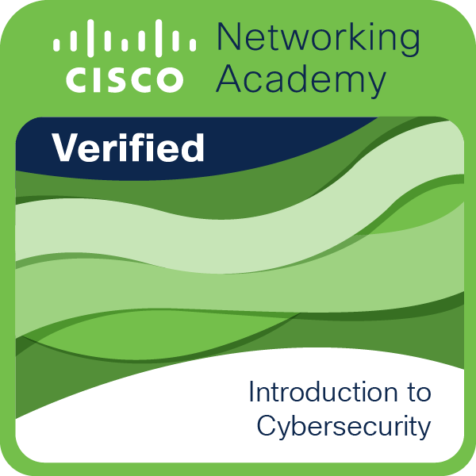

Cisco Networking Academy
Introduction to Cybersecurity
Obtenue le 11/02/2026
Les bases de la cybersécurité : les menaces et attaques les plus courantes, les failles qu'elles exploitent, et comment s'en protéger, en tant qu'utilisateur comme en entreprise.
Voir le certificat